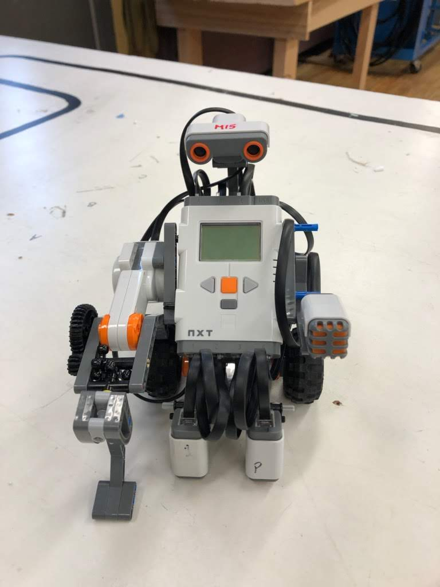
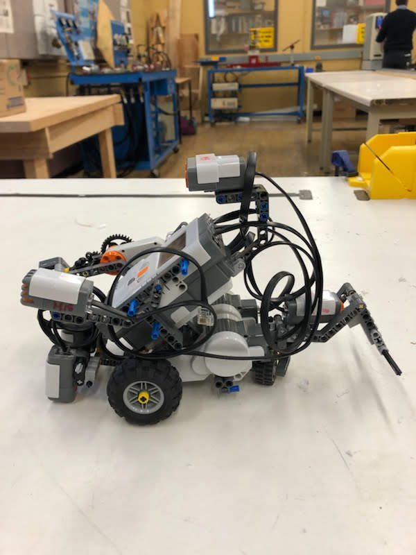
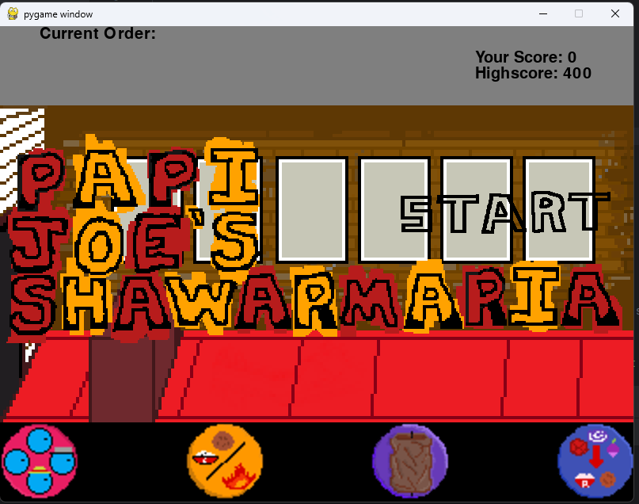

My Projects
Line-Following Robot (Grade 10 Computer Engineering Project)
In Grade 10, I built a Line-Following Robot using LEGO Mindstorms NXT. The robot used light sensors to detect black tape on the floor and adjusted its motors in real-time, allowing it to autonomously follow the path. This project introduced me to robotics, sensors, and control systems, sparking my early interest in engineering and programming.
 Technologies used: LEGO NXT, Light Sensors, Basic Control Algorithms
Snake Game (Grade 11 Final Project)
Back in Grade 11, one of my biggest projects was building a Snake game in Python. It was my first time really getting into game development, and it helped me learn a lot about programming logic. The idea was simple: clone the original snake game. Looking back on it, it does look terrible and is very unoptimized, but I’m still proud of it.

Technologies used: Python, Pygame
Papi Joe’s Shawarmania (Grade 12 Final Project)
In Grade 12, I challenged myself with something more creative. I made a parody cooking game called Papi Joe’s Shawarmania, inspired by Papa’s Pizzeria. The goal was to build rice bowls and shawarmas for customers. It gave me a chance to combine coding with creativity.
Technologies used: Python, Pygame
Healthcare Appointment App (Year 2 University Project)
In my second year, I built a healthcare appointment app using Python and Tkinter. This project focused on user interface design and backend logic for scheduling and managing appointments. It solidified my understanding of object-oriented programming and real-world application development.
Technologies used: Python, Tkinter